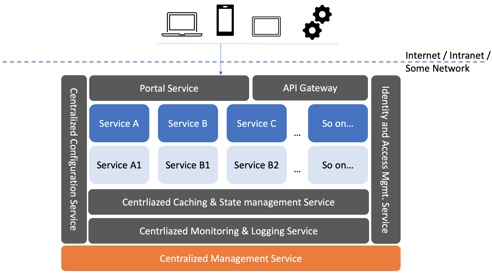
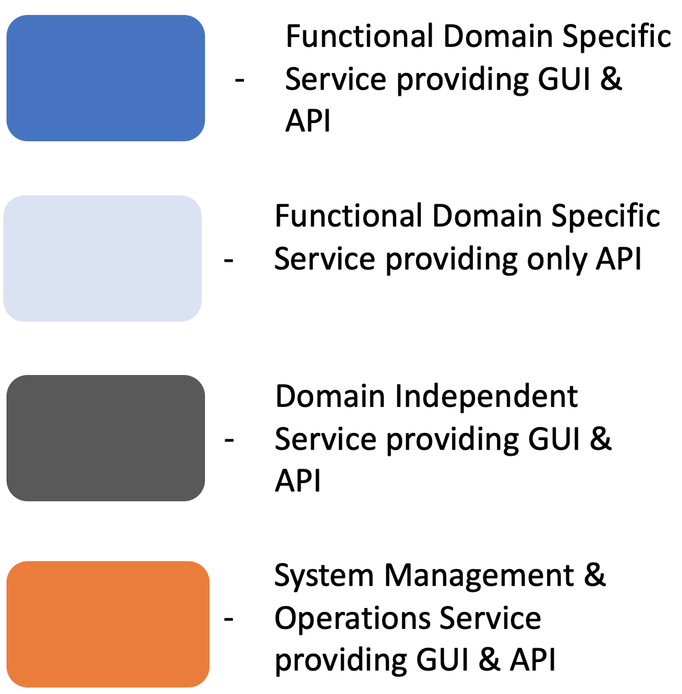

Logical Architecture
The diagram below provides a high level logical architecture of Sysfoundry. You can think of this as a reference architecture of the domain specific solution you can build using Sysfoundry.

The legend for the colored boxes in the above diagram is shown below.
